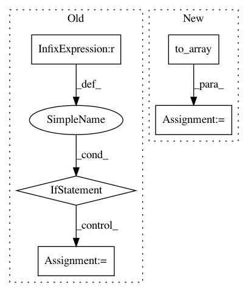

e3f4b018d3591f239c6d59cc93b895be4c1791fa,elfi/methods/methods.py,BayesianOptimization,update,#BayesianOptimization#Any#Any#,353
Before Change
current = self.target_model.n_observations + self.batch_size
next_update = self.state["last_update"] + self.update_interval
if current >= self.n_initial_evidence and current >= next_update:
optimize = True
self.state["last_update"] = current
else: optimize = False
params = np.atleast_2d([batch[param] for param in self.model.parameters])
for i in range(self.batch_size):
logger.debug("Observed batch {}: {} at {}".format(batch_index,
batch[self.target][i][0],
After Change
def update(self, batch, batch_index):
Update the GP regression model of the target node.
params = self.to_array(batch, self.parameters)
self._report_batch(batch_index, params, batch[self.target])
optimize = self._should_optimize()
self.target_model.update(params, batch[self.target], optimize)
In pattern: SUPERPATTERN
Frequency: 3
Non-data size: 5
Instances
Project Name: elfi-dev/elfi
Commit Name: e3f4b018d3591f239c6d59cc93b895be4c1791fa
Time: 2017-03-31
Author: jarno.lintusaari@aalto.fi
File Name: elfi/methods/methods.py
Class Name: BayesianOptimization
Method Name: update
Project Name: Qiskit/qiskit-aqua
Commit Name: 7735260c7da1eea7afb9dd629ddd17bea9cd8b74
Time: 2020-08-04
Author: jules.gacon@googlemail.com
File Name: qiskit/optimization/algorithms/grover_optimizer.py
Class Name: GroverOptimizer
Method Name: solve
Project Name: elfi-dev/elfi
Commit Name: 08f049c9fc5fc0f3da5a830de72a583007cdec66
Time: 2017-03-31
Author: jarno.lintusaari@aalto.fi
File Name: elfi/methods/methods.py
Class Name: BayesianOptimization
Method Name: __init__